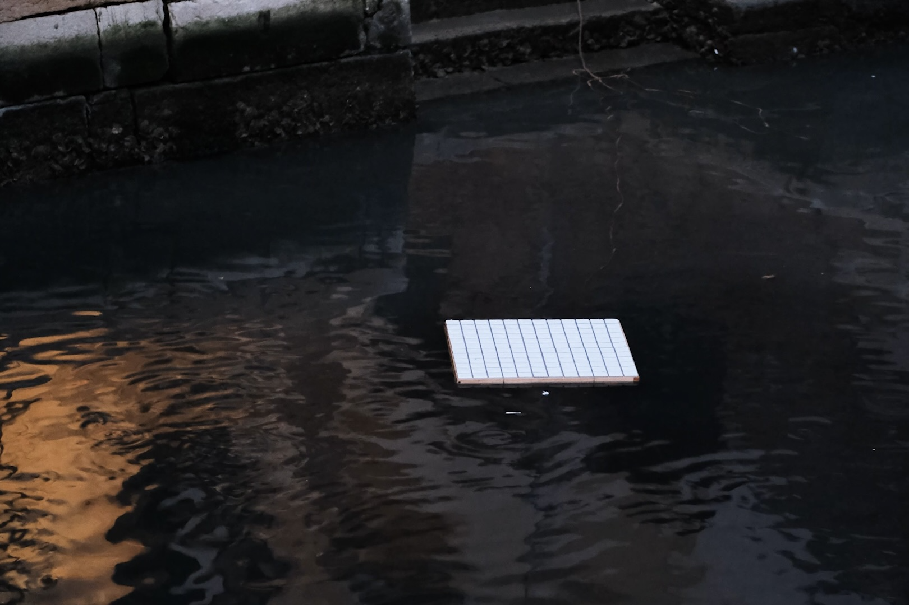

Kickboard
Piastrelle in ceramica, legno, pannelli in schiuma, cavi aeronautici
Linsi Yang
Progetto in corso, installato nel Mar Cinese Meridionale al confine con Hong Kong, città natale dell'artista, il Lago Michigan di Chicago e ora la Laguna Veneta, Kickboard di Yang studia l'interazione tra l'acqua e i materiali delle città che da essa dipendono. La transitorietà dell'acqua viene contestata in modi diversi, poiché le tavole si arrugginiscono, trasportano sale e si ammuffiscono durante la vita dell'opera. Yang non le considera fastidiose seccature, ma ricordi di una vita acquatica, le impronte dell'essenza di queste città. Con l'innalzarsi del livello dell'acqua, a Venezia e in tutto il mondo, queste realtà materiali diventano condizioni di vita con cui è necessario confrontarsi.